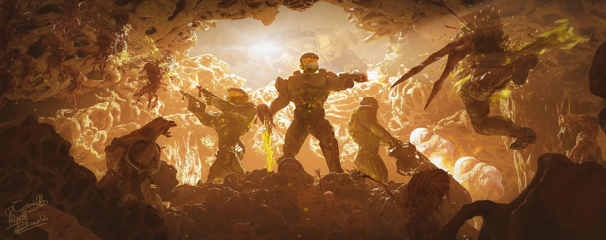
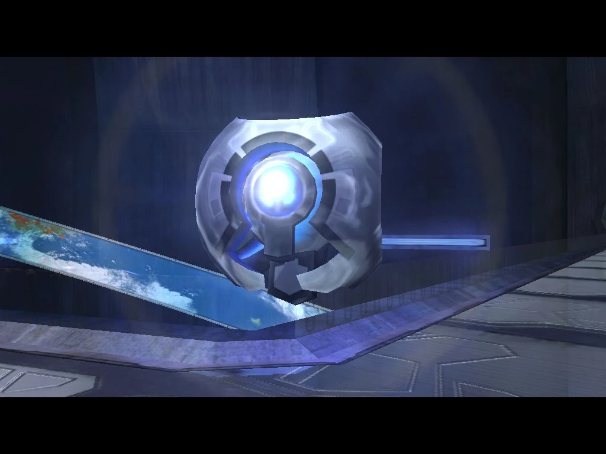

Mergi la inceput
Mergi inapoi
343 Guilty Spark
Misiunea are un ton horror, fiind prima întâlnire cu Flood. În timp ce Master Chief caută
echipa lui Keyes într-o structură subterană, acesta găsește cadavre și înregistrări video care
arată cum soldații Covenant și UNSC au fost copleșiți de paraziții Flood. În final, Chief este
atacat de Flood, dar este salvat de un AI bizar numit 343 Guilty Spark, care îl teleporteză în
altă locație, aparent pentru a rezolva situația.


Urmatorul nivel.